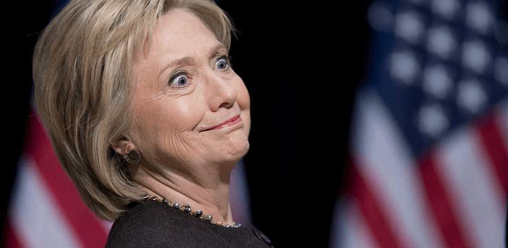

Libertas is a young bard traveling along the endless road to self-improvement and recounting his adventures. You can follow him on Twitter.


Although I predicted a Donald Trump victory last fall, and my confidence in this outcome is higher now than ever, we must still prepare for the worst. As he himself mentions in The Art of the Deal, “prepare for the downsides and the upsides will take care of themselves.” A Hillary Clinton victory is still a big possibility and still the favored outcome on paper. We must therefore manage our expectations. If the worst were to happen, how bad would it be, and what can be done to survive and thrive?
While a Hillary Clinton presidency represents several unmitigated disasters that must be avoided at all costs, there are still, in my opinion at least, a few surprising silver linings that enterprising men can take advantage of, as disaster has always provided opportunities to those who saw them.
Whoever wins this election will be the most unpopular person ever elected President. This will make it very difficult for that person to govern. However, unlike Donald Trump, Hillary Clinton has no charisma. The result will be a regime that is deeply unpopular and distrusted, and will remain that way.
While Donald Trump may be able to use his powers of persuasion effectively, Hillary Clinton has no such powers. The media will certainly be on her side, but the media is already overwhelmingly distrusted and declining in influence rapidly. The proof is in the money. “Journalists” barely sell books, and Hillary Clinton couldn’t even sell 3,000 in its launch week. For a presidential candidate of a major party with a united establishment behind her, this is utterly embarrassing.
Time and again, the pattern has been: the more the public sees of Hillary, the more it dislikes her. Truthfully, there’s no better symbol to discredit the establishment than Hillary Clinton, whose incompetence, corruption, and lack of charisma and persuasive abilities will be symbolic of its moral and intellectual bankruptcy.
As people look for alternatives, whether in politics or in their personal lives, opportunities will open, and there’s no better symbol to stage a contrast with than Hillary Clinton (a face is always the best thing to attach a thought to, as per Scott Adams, and her face is guaranteed to generate strong emotions).

Regardless of how unpopular she is, Hillary Clinton, if elected, could end up filling two or three vacancies if some older liberal justices decide to time their retirement for the occasion. This will likely permanently realign the court and make it a rubber stamp for any “social justice” endeavor that the regressive left wants to pass.
Men, especially on college campuses, will have to take special heed. It may become necessary to record all interactions with women if, as seems possible, the “misogyny” pilot program underway in the UK expands. This is especially so if “misogyny” becomes paired with the increasingly nebulous concept of “harassment” (all words engineered to shut down critical thinking and operate on confirmation bias).
Black Lives Matter will increase in power. Violence against dissenters will become more open and encouraged through selective enforcement. Islam will continue to demographically expand through accelerated “refugee” resettlement. More terrorist attacks in the US and Europe are certain, and the creep of Islam in mainstream culture will accelerate.
Decrees mandating the increased presence of “social justice” related initiatives in college, at the workplace, and in your neighborhood could well be passed. It’s possible that cuckolding culture will take off, with media blitzes about how “progressive” and “not sexist” it is. What better way to control your “toxic masculinity” (and to promote female desires at the expense of men)?
However…
Aside from his charisma and persuasive abilities, the reason Barack Obama was so successful in selling his “fundamental transformation of America” was because he was almost a blank slate. He arrived with such meteoric velocity that he was more myth than man. Comparatively little was known about him. In four years, he went from obscure Illinois lawmaker to President-Elect. People could fill in the blanks with whatever they wanted to.
Hillary Clinton lacks this too. Everyone’s known her for decades. Her image can’t change. Young regressives voted overwhelmingly against her in the primaries and her lead among Millennials is dismal at best. Even Bernie Sanders, who drew massive crowds, barely drew 200 for Hillary. Millennial turnout will likely drop with black turnout. It’s hard to get excited about Hillary. Her reputation is just as negative among Millennials as everyone else. What’s Hillary running on? What’s the aspiration she’s selling?
There are many indications that there’s such little excitement for Hillary that even if she were to win, she would be a terrible salesperson for the regressives. They don’t like her and her ability to rally them is doubtful.
The spread of social movements isn’t only related to their truthfulness, but often with the status they convey on adherents. Accusing someone of witchcraft centuries ago was a way to decrease the status of the accused and increase that of the accuser by showing his or her piety to the prevailing orthodoxy. It’s no different now when someone is accused of whatever label that regressives like.
Barack Obama had a “coolness” factor allowing him to elevate the regressive left in power and status, from which it could look down on benighted souls that dared to dissent. Hillary lacks much of this. She may promote the regressive left and will work on its behalf, but it’s far from certain that she’ll continue to make it “cool.” It is instead possible that regressives will lose status because of her sheer incompetence and terrible salesmanship.
In the meantime, the counter culture that we’re part of will grow because of the lame symbol that is Hillary Clinton. It is to this counter culture that you can position your enterprising efforts, and I’m hedged in that way because one of my projects will be more relevant if Hillary wins.
So while Hillary Clinton will legally strengthen the regressives, it’s far from certain that she will add cultural force to them. She may in fact wind up weakening them with her lame and incompetent administration.
https://www.youtube.com/watch?v=DxfMUEf9otQ
The biggest danger Hillary Clinton poses is that she’s never seen a war she hasn’t liked. Hillary has repeatedly called for a no fly zone over Syria, which would mean shooting down Russian aircraft. Moscow considers her an existential threat, and she reportedly believes that Putin would “back down.”
In truth, the Syrian conflict is probably more dangerous than anything in the Cold War. You have two sides armed by opposing powers in conflict with one another, and aircraft from those major powers flying sorties in the same narrow airspace. This is not something I want Hillary Clinton, a warmonger and an incompetent one, anywhere near.
There’s a reason why the GOP’s neocons have lined up behind Hillary. If she wins, we can at the very least expect continued destabilization of the Middle East and possibly other areas, which means even more “refugees” imported into the West and an increased risk of terrorism.

A Hillary Clinton presidency must be avoided at all costs. It’s vital for every ROK reader who is eligible to vote to turn out. This year’s “gender gap” is a reversal of the norm—Hillary Clinton is having deep trouble with men. It may just be men like you and I that decide things.
But if there is a silver lining to the worst case scenario, it may be that Hillary’s total lack of persuasive ability and her thoroughly corrupt reputation shred whatever credibility the establishment has left. By any reasonable measure her presidency would be a disaster, but in disaster lies opportunity. Perhaps this is being overly optimistic, and I understand that sentiment. But as Scott Adams remarks, you can interpret almost anything as good or bad news, so I try to find what good I can.
Read More: 5 Examples Of The Mainstream Media’s Extreme Bias